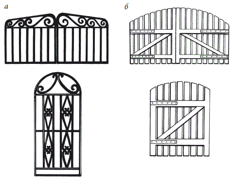
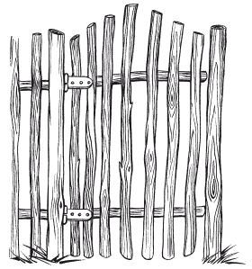

Ворота, калитки и заборы.

При их сооружении следует помнить 3 правила. Во-первых, ворота и калитки не должны открываться наружу, а также иметь пороги, которые могут затруднить проезд. Во-вторых, минимальная ширина въездных ворот должна составлять 2,4 м, а калитки – 0,9 м (рис. 37). В-третьих, при входе следует найти место для домофона, почтового ящика и соответствующего освещения.
Также необходимо продумать вопрос о прокладке кабелей.

Калитку и ворота обычно делают из тех же материалов, что и пролеты. Но поскольку калитка и ворота – элементы очень подвижные, а временами весьма динамичные, то они должны иметь солидную конструкцию. Поэтому ворота, особенно если пролеты ограждения выполнены из кирпича, делают из металла.
Если забор сделан из дерева, то калитка также должна быть из дерева. К несущему скелету (раме), который может быть стальным или деревянным, крепятся все остальные элементы. В деревянной конструкции вертикальные несущие балки должны быть толще горизонтальных, и их размеры оставляют соответственно 8 ? 10 см и 5 ? 10 см. Подкос применяют, чтобы предотвратить опускание свободного конца ворот или калитки.
Ворота – особый проезд за ограду, которая закрывается широкими створками. Это своего рода визитная карточка дома и его хозяев, поэтому их стараются сделать особо красивыми, прочными и удобными.
В деревянных конструкциях типовых размеров подкос может быть выполнен из балки сечением 5 ? 7 см. В элементах деревянной конструкции подкос должен подпирать свободный конец верхней полосы (в этом случае он сжимается). В металлической конструкции подкос лучше растянуть, чтобы он смог поддерживать свободный конец нижней полосы. Подкос можно также применять в сдвижных створках.
Калитка в деревенском стилеЕе легко сделать самим из тонких стволов березы и молодых тополей общей длиной 7 м. Также для работы понадобятся винты для дерева, две петли для калитки и пила.
Прежде всего следует подготовить деревянные колышки, спилив стволы деревьев до предполагаемой высоты калитки. Размер кольев, поскольку к ним будут крепиться петли, должен составлять в диаметре не менее 4 см.
В первую очередь для калитки следует изготовить 2 перекладины одинаковой длины, на которых впоследствии надо прикрепить деревянные колышки. Две перекладины нужно расположить на земле на расстоянии 60 см друг от друга. На них надо разложить вертикально колышки на расстоянии 6 см друг от друга. В колышках просверлить дырки, а потом закрепить их винтами. На перекладинах поместить петли и также зафиксировать их при помощи винтов. Вторую часть петли прикрутить к столбу забора, после чего следует убедиться, что калитке ничто не мешает свободно открываться и закрываться. Также можно приделать задвижку или использовать пеньковую веревку для закрытия калитки. Калитка готова (рис. 38). По этому же принципу можно смастерить забор. Он делается так же, как и калитка, только расстояние между перекладинами следует увеличить до 1,2 м.

«Зеленый» забор
Весьма оригинально смотрится зеленая ограда из растений. Живой забор из кустарников различных видов не только красив, но и служит прекрасным ограждением территории. Обычно высота зеленой растительной изгороди поддерживается на уровне 2–3 м. Поэтому подобная ограда может обеспечить надежную защиту от посторонних глаз, к тому же убережет участок от ветра. Буйная растительность может быть даже более труднопреодолимым препятствием, чем привычный каменный или деревянный забор.
Если растения для живой изгороди высаживать по самому краю тротуара или вплотную к участку соседа, то через несколько лет можно столкнуться с фактом, что забор навис над дорогой или вклинился на соседний участок. Подобная оплошность может привести к конфликтам.
Для создания живой ограды необходимо в первую очередь подобрать саженцы довольно высоких кустарников. Желаемой формы можно добиться регулярной стрижкой. Для зеленой стены идеально подходит ива. Для высокой колючей изгороди хороши боярышник и барбарис обыкновенный. Вполне сгодятся калина, жимолость обыкновенная и татарская, дерен, лещина, некоторые виды чубушника, золотая смородина и другие растения. Если ветви переплетать между собой по мере их роста, получается совершенно глухой забор из посадок ивы или боярышника. Для того чтобы забор твердо стоял на «ногах», а вернее – на опорах, необходимо ямы делать на 10 см больше глубины установки столбов. Только в этом случае гарантируется ограждение по одной горизонтальной линии и исключается необходимость ручной подчистки дна ямы. Под каждой опорой необходимо устроить дренирующую подушку. В глинах и суглинках глубина ям должны составлять не менее 0,8 м, а на супесях и песках – не менее 1 м.
Перед тем как высаживать живой забор вдоль границы с соседним участком, необходимо рассчитать, не будет ли он из почвы забирать много влаги и питательных веществ, а также затенять близлежащие растения. Как правило, зеленый забор красиво смотрится, когда он состоит из растений одного сорта. Однако это не обязательно. Зеленые ограды делают стрижеными и свободно растущими, одно-двух– и трехъярусными. Самый распространенный тип живого забора – это декоративная одноили двухрядная полоса кустарника высотой 1,5–2 м.
Решив устроить на участке зеленую ограду, в первую очередь следует выбрать место для посадки, растения и определиться, каким будет забор – одно– или двухрядным. Заранее следует учесть, что с годами ширина выросшего живого забора будет гораздо больше, чем его закладывают в момент посадки.
Также важно определить, какой забор нужен. Различают несколько видов зеленых ограждений: формованный и неформованный заборы, низкорослый или высокорослый, который принято называть «зеленой» стенкой.
Формованный забор
Формованный забор – это традиционный вид подстриженного живого забора с густой листвой и ровными поверхностями. Подобное ограждение обычно выращивают, чтобы создать непроницаемый экран, однако оно может быть украшено цветами или плодами. Для формованного забора подойдут кипарис, тис, туя и быстрорастущий кипарисовик, который за 5 лет может вырасти до 3 м. В первые годы все деревья нужно подвязывать и регулярно стричь.
Неформованный забор
Неформованный забор – это ограждение из сохраняющих свою естественную форму цветущих или плодоносящих растений. Такой забор обеспечивает определенную защиту от любопытных взоров, к тому же его не подвергают регулярной обрезке. Для неформованного забора хорошо подойдет рододендрон с крупными овальными листьями и светло-пурпурными цветками. Посадив несколько красивых растений, можно создать высокий раскидистый живой забор. Однако учтите, что рододендрон любит кислую почву, а стригут его сразу после цветения.
В озеленении принята следующая градация живых ограждений из деревьев и кустарников: высокие (2,5–3 м); средние (1,5–2 м) и бордюры, то есть низкие (высотой до 1 м).
Низкорослый забор
Низкорослый забор в большей мере подходит для обрамления клумб и бордюров. Растения в таком ограждении надо стричь регулярно, выдерживать высоту около 1 м или ниже, придавать ограде определенную форму. Излюбленное растение для низкорослых заборов – самшит вечнозеленый, который медленно растет и не требует богатой почвы. Стригут самшит в июле или августе.
«Зеленые» стенки
Зеленые стенки обычно устраивают из растений, которые достигают высоты 3 м.
Высокий и густой забор хорошо защищает участок от любопытных взглядов, но у него есть недостатки. Стрижка живого забора требует более тщательного подхода в выборе ассортимента, поскольку любой изъян на ровной поверхности зеленой стенки виден сразу. Для живых стен подойдут привитые формы клена, робинии, тополя, вяза, ясеня. Они сохраняют высоту штамба и развивают пышные кроны. Подходящим деревом для зеленой стенки считается липа мелколистная, хорошо переносящая стрижку, формовку кроны, однако ее трудно удержать в пределах заданной высоты. Однако главная трудность при создании зеленой стены заключается не в подборе ассортимента и добыче саженцев, а в обязательной регулярной обрезке растений. Поэтому, если нет уверенности, что среди домочадцев найдется охотник регулярно обрезать быстро растущие деревья, то от затеи лучше отказаться или выбрать для забора свободно растущие растения. Можно остановиться на хвойных породах, которые рекомендуются для свободно растущих стен и к тому же очень красивы и естественны. Для средней полосы подходят ель обыкновенная, сосна горная низкая, можжевельник обыкновенный колонновидный, а также лавр, туя, тис, самшит.
Устройство «зеленого» забора
Определившись с местом, нужно вырыть траншею шириной около 1 м, очистить почву от корней многолетних сорняков и разметить посадочные ямки. Если посадочного материала мало или нет необходимости быстро вырастить плотный забор, то растения можно посадить в один ряд. Посередине вскопанной полосы шнуром намечают линию посадки, а места посадки растений обозначают колышками. Небольшие растения высаживают на расстоянии 35–45 см друг от друга, а высокорослые – на расстоянии 60–75 см. Если необходим плотный забор, целесообразно высаживать растения в два ряда, желательно в шахматном порядке. Линии посадки размечаются шнуром на расстоянии 35 см одна от другой. Вдоль каждой линии колышками через 45 см обозначают места посадки.
Живые заборы обозначают границы участка и в какой-то степени обеспечивают уголки уединенности внутри приусадебного участка. Кроме того, они могут выполнять также другие задачи – разделять сад на зоны, защищать от шума.
После посадки вдоль молодых растений нужно натянуть проволоку и подвязать к ней все саженцы. В первый сезон растения следует регулярно поливать, вносить удобрения и глубоко обрабатывать почву.